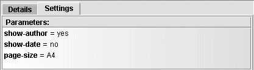
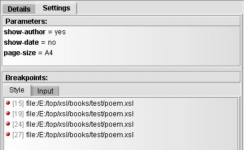
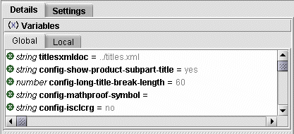
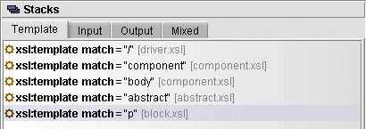

on the menu bar). In the new Debugger window, choose File->New Transformation and dialogs are displayed for entering the input document, the stylesheet and the processor choice.
on the menu bar). In the new Debugger window, choose File->New Transformation and dialogs are displayed for entering the input document, the stylesheet and the processor choice.
Exchanger XML Editor includes a comprehensive XSLT debugger for both Saxon and Xalan processors. The Exchanger XSLT Debugger can be run from within the editor or as a standalone application, with the latter option allowing the use of extremely large input and output documents and complex stylesheets with minimal memory and CPU requirements. It is possible to use the debugger in an ad-hoc mode, choosing files and setting breakpoints as you go but the more usual approach is to use a Transformation Scenario as this facilitates the reuse of setup information, including breakpoints, across debugging and editing sessions. Unlike other debuggers, Exchanger allows the user to step through the stylesheets on an element-by-element basis (including end tags) as opposed to line by line - this is very convenient in the usual case where multiple XSL instructions occur on the same line. For Saxon users, the content from multiple files generated using the <xsl:document> instruction can be redirected to a tabbed display in the output view for convenience.
In the Editor, choose Transform->XSLT Debugger (or press the Debug Transformation button on the menu bar). In the new Debugger window, choose File->New Transformation and dialogs are displayed for entering the input document, the stylesheet and the processor choice.
For the input, choose projects/XSLT Debugger Sample/input/poem.xml

Figure 1. XSLT Debugger -Input
For the stylesheet choose projects/XSLT Debugger Sample/style/poem.xsl

Figure 2. XSLT Debugger -Input
Set the processor to Saxon (XSLT 1.*).

Figure 3. XSLT Debugger - New Transformation
After pressing Enter, the stylesheet (poem.xsl) is displayed in the left hand pane with the input document (poem.xml) to the right of the stylesheet. The processor used (in this case Saxon XSLT 1.*) is identified in the status bar at the lower right-hand corner of the screen.

Figure 4. XSLT Debugger - New Transformation
Press the Step Into button  (or use the shortcut F5 or choose Debug->Step Into). The first template in the stylesheet (at line 5) is highlighted along with the first (poem) element in the input. Create a breakpoint in the stylesheet at line number 11 (the one containing <xsl:apply-templates select="title"/>)
by double-clicking in the margin to the left of the line number.
(or use the shortcut F5 or choose Debug->Step Into). The first template in the stylesheet (at line 5) is highlighted along with the first (poem) element in the input. Create a breakpoint in the stylesheet at line number 11 (the one containing <xsl:apply-templates select="title"/>)
by double-clicking in the margin to the left of the line number.

Figure 5. XSLT Debugger - Stylesheet Breakpoint
Now press the Start/Continue button  (or use the shortcut F11 or choose Debug->Start/Continue) and the processor will execute the intervening instructions and stop at line 11. Notice how the output so far has automatically
appeared at the bottom of the screen.
(or use the shortcut F11 or choose Debug->Start/Continue) and the processor will execute the intervening instructions and stop at line 11. Notice how the output so far has automatically
appeared at the bottom of the screen.
Press the Step Into button to step into the title template - the stylesheet scrolls down to line 19 and the corresponding title element is now highlighted in the input file. Notice also how the Template stack now has a new entry for title. (The Template Stack is available on the first tab in the Stacks window on the right-hand side of the screen).
Figure 6. XSLT Debugger - Template Stack
Press Step Into repeatedly to step through each instruction in the "title" template until that template is finished and execution returns to line 12 which is then highlighted in the stylesheet (<xsl:apply-templates select="author"/> ) .
This time, press the Step Over button once  (or use the shortcut F10 or choose Debug->Step Over) to execute all of the instructions in the "author" template at one time.
(or use the shortcut F10 or choose Debug->Step Over) to execute all of the instructions in the "author" template at one time.
Now create an input breakpoint by double-clicking in the margin for line number 21 in the input file. Press the Start/Continue button and the processing will execute until line 21 is reached in the input file with the corresponding template highlighted in the stylesheet.
Browse the stacks to see the processing state - the Template stack will show the list of XSLT templates that are active at this point while the input stack will show the input elements that triggered the corresponding entries on the template stack. Double-clicking an entry in the style or input stack will highlight the corresponding element in the input or stylesheet displays.

Figure 7. XSLT Debugger - Input Stack
To complete the processing, press Continue. Alternatively, repeatedly press the Step Out button  (or use the shortcut Shift-F11 or choose Debug->Step Out) to reverse back up through the call stack, one template at a time.
(or use the shortcut Shift-F11 or choose Debug->Step Out) to reverse back up through the call stack, one template at a time.
Browse the Traces to see a history of the stylesheet execution - the style trace will show all the XSLT instructions that were executed while the input stack will show the corresponding input elements that were processed. Double-clicking an entry in the style or input trace will highlight the corresponding element in the input or stylesheet displays. The output Trace presents a tree view of the generated HTML while the Mixed Trace consists of a collated compiliation of the other three traces to show a complete history of the transformation as it happened.

Figure 8. XSLT Debugger - Mixed Trace
The following graphic shows a complex debugging scenario, with multiple stylesheets and output files and provides a good overview of the general Debugger layout.

Figure 9. XSLT Debugger Layout
The debugger user interface is divided vertically with input information displayed above output information. The input consists of:
One or more Stylesheets containing breakpoints.
One or more input documents, also allowing breakpoints.
The Details view, consisting of:
Variables View containing Global Variables and Parameters, and Local Variables and Parameters.
A set of Stacks showing live information for the current state of the transformation including:
The XSL Template Stack, showing the calling sequence of <xsl:template> instructions
The Input Stack, showing the elements that triggered the templates.
The Output Stack stack, showing the matching elements created in the output.
A Mixed Stack showing the stylesheet instructions collated with the input and output element.
The Settings view, consisting of Parameters and Breakpoints.
The Output View is shown in the lower part of the window and consists of:
The Output of the transformation, dynamically updated as it is generated.
For Saxon, the content generated in output files created via <xsl:document> instructions (if the Transformation->Redirect Output setting is true).
Any Messages that are output as a result of the transformation via <xsl:message> instructions. (Saxon only)
A set of Traces showing historical information from the start to the current position including:
The Style Trace, showing a list of all stylesheet instructions executed so far, in order or occurrence.
The Input Trace, showing the input elements that triggered the templates on the Style trace.
The Output Trace, showing all elements created in the output.
A Mixed Trace, showing the style, input and output traces collated in order of occurrence to give a complete historical view of the transformation to date.
Use Step Into to step element-by-element through a stylesheet. The Exchanger XSLT Debugger is diffferent in this case from most others in that it allows you to step through start and end tags, providing a much more logical debugging experience compared to line-by-line operation . On encountering xsl:apply-template or xsl:call-template instructions, the debugger will move the current position to the first instruction in the appropriate template. Step Into can be used at the very start of a transformation to step to the very first instruction that is executed. Note that when using Xalan, using Step Into at the beginning of a transformation will move processing to the first template it encounters, whereas Saxon will allow you to step through any parameters or global variables you may have in your stylesheet.
Use Step Out to complete execution of the current template and move to the next instruction. Again, the Exchanger XSLT Debugger is diffferent here from other products in that it restricts the Step Out functionality exclusively to templates, making the functionality more intuitive.
Use Step Over when positioned at xsl:apply-template or xsl:call-template instructions so as to completely execute the appropriate template (without stepping into it) and to move to the next instruction.
Use Start/Continue to commence a transformation - ensure that you have a breakpoint set or the transformation will automatically run to completion. (Alternatively, use Step Into to commence the transformation if you want to stop at the first instruction in the stylesheet.) Once the processor has been paused, use the Start/Continue button to run the transformation until the next breakpoint or until the end of the transformation is encountered.
Use Pause to interrupt a long-running transformation. When the debugger pauses, all the variables, parameters, stacks and traces will be setup correctly and you can continue execution from that point using any of the stepping or continue functions.
Use Stop to instantaneously stop a long-running transformation - note that no information relating to the transformation will be retained and you will not be able to recommence the processing without starting at the beginning again.
Use Run to End to complete the transformation without stopping at any enabled breakpoints.
Basic editing features are available inside the debugger for modifying stylesheets and input files. These features are avilable on the Edit menu and include Copy, Cut, Paste, Find, Find Next and Goto Line Number. Tag completion and syntax highlighting is also available. To maintain changes, use File->Save or else use File->Reload to discard changes and revert to the original file. Output files generated as a result of running a transformation can also be saved, by clicking on the output window and selecting File->Save As...
Transformation Scenarios provide a mechanism for storing commonly used setup information relating to an XSLT transformation so that it doesn't have to be rekeyed for each execution. As a result, transformation scenarios are very convenient when using the debugger to repetitively test stylesheets. To use an existing scenario in the Debugger, select File->Open->From Scenario... and choose the appropriate scenario. The scenario will typically set up the input filename, the stylesheet, the processor and the transformation parameters, if any. Any changes made to the scenario during the dubugging process, for example, adding or modifying breakpoints and/or parameters, will automatically be saved so that the next time the scenario is used, the updated information will be used.
Instead of using Transformation Scenarios, the debugger can be used in ad-hoc fashion where all the setup information is entered at run-time. Select File->New Transformation and in the pop-up dialog, enter the stylesheet, input and processsor settings you desire. Before starting the transformation, it is possible to use the Transformation->Set Parameters dialog to pass in parameters that will be used in the transformation. At any time, it is possible to save the current ad-hoc setup to a new scenario for future use by selecting File->Save As Scenario... and entering the scenario name. Also, you will be prompted to save the current settings in a scenario if you choose File->Close Scenario... or when creating a new transformation if there is one already active (or when shutting down the debugger).
There are a number of global settings available on the Transformation menu to control the debugging process for all transformations, whether they use an ad-hoc or scenario setup. Turn off Transformation->Automatically Open Input before you create a new transformation (or open from scenario) if you are debugging a large input file and want to minimize the amount of memory used up. Similarly turn off Transformation->Enable Tracing as recording and displaying every single instruction for a complicated stylesheet and/or large input document can be very expensive in terms of memory usage and can cause Out of Memory failures. For Saxon users, turn off Transformation->Redirect Output if you want output files to be created on disk rather than being displayed in the debugger.
The Setting tab on the right hand side of the debugger window contains information relating to debugger setup, specifically breakpoints and parameters.
The parameter window in the Transformation Settings tab displays details of any transformation parameters that have been set up in a scenario or via the Transformation->Set Parameters function. Parameter name-value pairs are displayed in the table.
Figure 10. XSLT Debugger - Parameters
To create a breakpoint in the debugger, double click on the left margin of a stylesheet or the left margin of an input document and a breakpoint icon (red dot) is displayed. Note that the breakpoint must be positioned correctly to force a stop in the processing. If the breakpoint is positioned at a point where there is not a tag (e.g. a blank line or a line of text) then it will have no impact. Moreover, a breakpoint can only be placed on a start-tag and then, if the start tag spans multiple lines, the breakpoint must be placed on the last line of the start tag for it to be effective.
To temporarily de-activate a breakpoint, right-click on the icon (or anywhere on that line) and select Disable Breakpoint - the icon should now turn grey to indicate that it won't cause a stop in processing. To re-activate a disabled breakpoint, right-click on the icon (or anywhere on that line) and select Enable Breakpoint - the icon will now be colored red to indicate it will cause a stop in processing. To remove a breakpoint enitirely, right-click on the icon (or anywhere on that line) and select Remove Breakpoint. Note that right-clicking in a file and choosing , Enable All Breakpoints, Disable All Breakpoints or Remove All Breakpoints will cause that operation to be carried out on all the breakpoints in that particular file.
A complete list of breakpoints can be viewed by selecting the Transformation Settings tab on the right-hand side of the screen. There are two separate lists, one for all stylesheet breakpoints and one for all input breakpoints. The lists are linked back to the content so double-clicking on a breakpoint definition highlights the appropriate line in the stylesheet or input file. Any breakpoints in the list that have been selected (or highlighted) can be enabled, disabled or removed by right-clicking and choosing the appropriate option.
Figure 11. XSLT Debugger - Breakpoints
Convenience fuctions for dealing with breakpoints as a whole across both stylesheets and input documents are available on the Transformation menu. Transformation->Disable All Breakpoints, Transformation->Enable All Breakpoints and Transformation->Remove All Breakpoints will affect any breakpoints in all the stylesheets or input files used in the transformation.
The Variables tab displays details of any global and local variables, including parameters that have been initialised in a scenario or via the Transformation->Set Parameters function and also default parameter values in the stylesheet itself. The variable/parameter name, type and string value are displayed in the table. Note that because of the use of "Lazy Evaluation" in Xalan, the values for variables and parameters is typically not available for that processor until they are actually used in the stylesheet.
Figure 12. XSLT Debugger - Global Variables

Figure 13. XSLT Debugger - Local Variables
The Stacks window contains live information for the state of the current transformation and is made up of four separate tabs.
The left-most tab contains the XSL Template stack, showing the calling sequence (top down) of <xsl:template> instructions that has resulted in the current position in the stylesheet. The template stack shows the template name and/or match attribute and the priority and mode, if any. Double-click on a template item to scroll to the corresponding point in the stylesheet.
Figure 14. XSLT Debugger - Template Stack
The next tab contains the Input stack showing the input elements that triggered the corresponding instructions on the XSL Templates stack. Double-click on an input item to scroll to the corresponding point in the input file.

Figure 15. XSLT Debugger - Input Stack
The Output stack consists of a tree representation of the output, showing the elements that have been created as a result of the instructions on the XSL Templates stack.

Figure 16. XSLT Debugger - Output Stack
The Mixed stack combines all the style instructions along with the corresponding input and output elements in a tree representation, collated in order of occurrence.

Figure 17. XSLT Debugger - Mixed Stack
The Trace view contains historical information about the current transformation and is made up of four separate tabs.
The left-most tab contains the Style Trace, showing all the XSL instructions that have been executed up to the current position in the stylesheet. Double-click on any XSL instruction trace to scroll to the corresponding point in the stylesheet.

Figure 18. XSLT Debugger - Style Trace
The next tab contains the Input Trace showing the input elements that have been procesed as a result of executing the xsl:template instructions on the XSL trace. Double-click on an input trace item to scroll to the corresponding point in the input file.

Figure 19. XSLT Debugger - Input Trace
The Output Trace consists of a tree representation of all the output to date, showing the elements that have been created as a result of the instructions on the XSL trace.

Figure 20. XSLT Debugger - Output Trace
The Mixed Trace combines all the style instructions along with the corresponding input and output elements in a tree representation, collated in order of occurrence. This trace provides a complete historical description of the transformation to date.

Figure 21. XSLT Debugger - Mixed Trace
The Exchanger XSLT Debugger can be run in isolation from the Exchanger XML Editor, while still making use of any Transformation Scenarios created within the Editor. Using the XSLT Debugger in stand-alone mode can be convenient when debugging memory-intensive transformations, particularly when the global options are set to turn off tracing and not to open the input document.
To run the debugger from the command line, ensure you are in the intall directory and then simply add the -debugger option to the standard command as follows:
./jre/bin/java -jar lib/xngr-loader.jar -debugger
By default, the content of output files created with the Saxon instruction <xsl:document> will automatically be redirected and displayed in separate tabs in the output section of the debugger. In this case, no actual output files will be generated. If you want to generate these files, or if you want to reduce memory by not displaying the files in the debugger, then change the global transformation setting using Transformation->Redirect Saxon output.
Because Xalan employs a Lazy Evaluation technique when dealing with variables and parameters, their values will typically show up as null in the display until they are actually used in the stylesheet. In Saxon, parameter and variable values are available at all times and can even change during a transformation (if the non-standard <saxon:assign> instruction is used).
Saxon allows for stepping through the definition of parameters and global variables, while Xalan goes straight to the first active template.
Xalan reports the use of built-in (default) templates while Saxon does not.
XSL Messages are displayed for Saxon, but go to the console for Xalan.